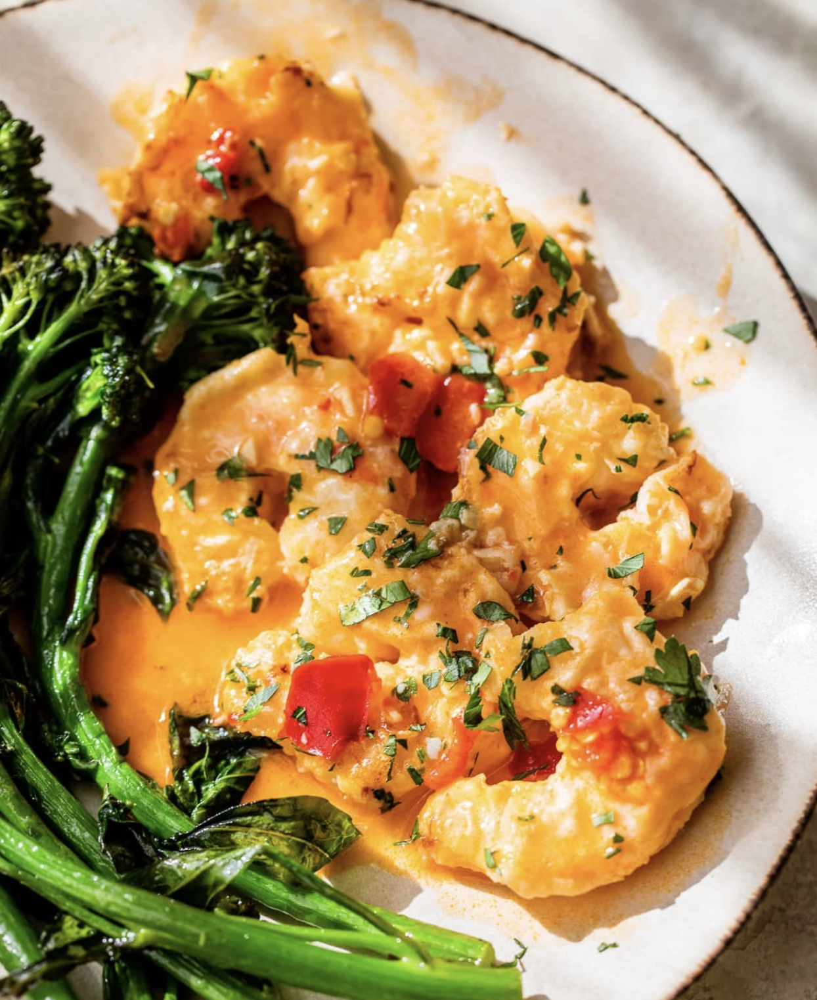

Spicy Shrimp Francese

Site: https://www.skinnytaste.com/shrimp-francese/
Yield 4 Servings
30 mins
Cals: 256
Protein: 27.5
Carbs: 9
Fats: 11
Ingredients
- 1 pound peeled and deveined shrimp, about 32
- 3/4 teaspoon kosher salt
- 1/4 cup unbleached flour
- 2 large eggs, beaten with 1 tbsp water
- 2 teaspoons extra olive oil
- 2 cloves minced garlic
- 4 to 5 jarred Calabrian chili peppers, sliced (or more to taste)
- 1 tablespoon oil from the Calabrian chili peppers
- 1 1/2 lemons
- 1/4 cup white wine
- 1 1/2 cups low sodium chicken broth
- 2 teaspoons salted butter
- chopped parsley, for garnish
Steps
- Season the shrimp with 1/2 teaspoon salt and black pepper to taste, on both sides.
- Place the flour in a shallow bowl, and the beaten eggs in another shallow bowl
- Lightly flour half of the shrimp, shaking off excess, then dip into the beaten eggs
- Heat a very large nonstick pan over medium heat. When hot cook the shrimp in two batches (in a single layer) – adding 1 teaspoon olive oil to lightly coat the bottom of the pan.
- Cook the shrimp 2-3 minutes on each side, or until the shrimp is opaque and cooked through.
- When cooked, transfer to a large plate and repeat with the remaining oil, flour and shrimp reserving the remaining flour.
- Place the chicken broth in a mixing bowl with 1 tablespoon of the flour and whisk. Add the juice from 1 lemon.
- To the skillet add 2 teaspoons of the Calabrian chili oil and add the garlic, cook 30 seconds, over medium heat until fragrant.
- Add the Calabrian chili peppers and white wine.
- Cook to reduce by half, then add the broth, bring to a boil and simmer over medium heat for about 4 to 4 minutes so it reduces slightly and thickens. Add the butter and let it melt.
- Return the shrimp to the skillet and mix well, cook 30 to 60 seconds more to heat through.
- Remove from heat and squeeze the remaining juice from the half lemon on top. Finish with parsley and enjoy!